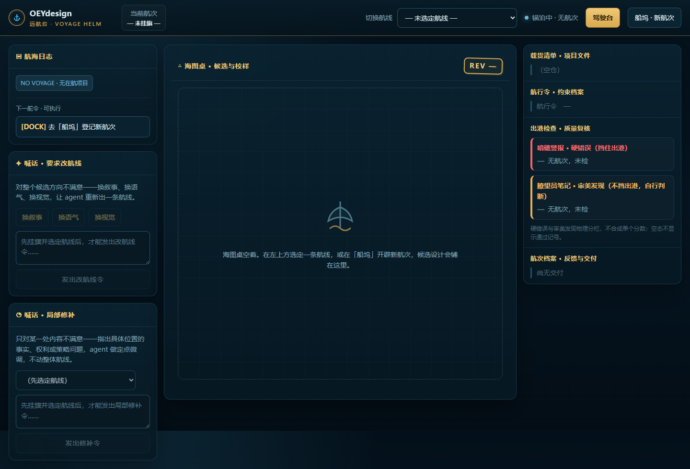
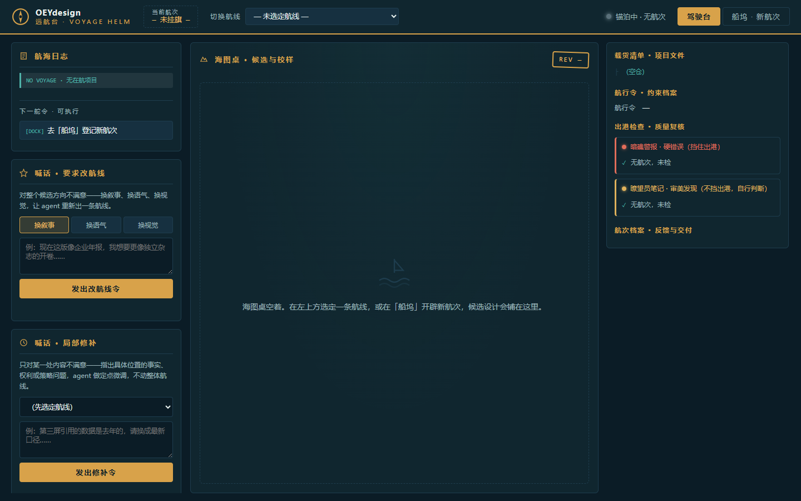
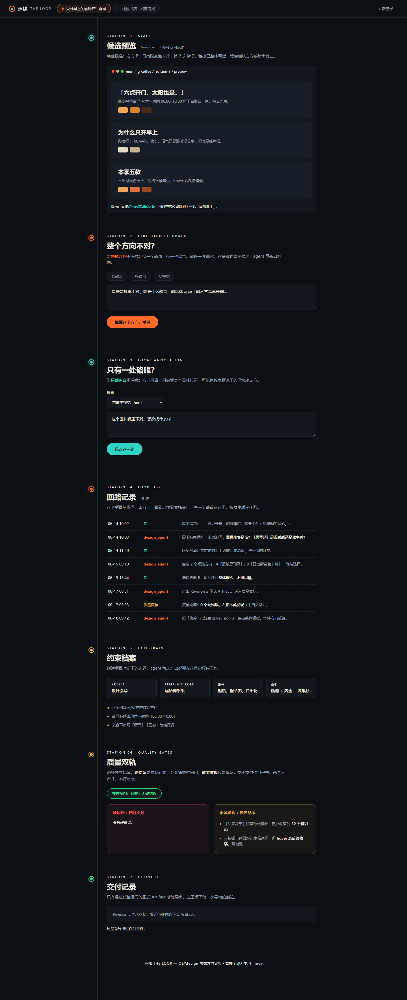
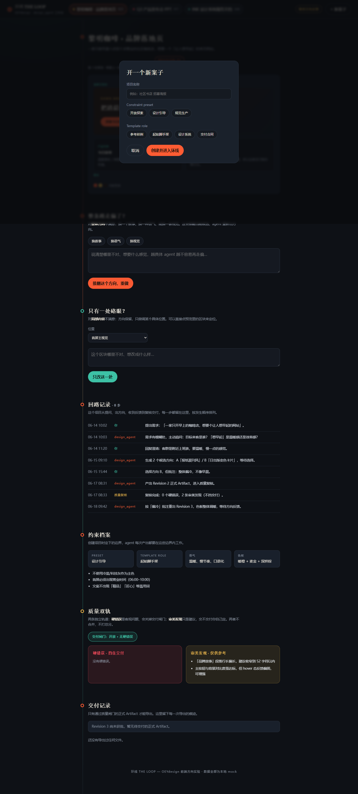
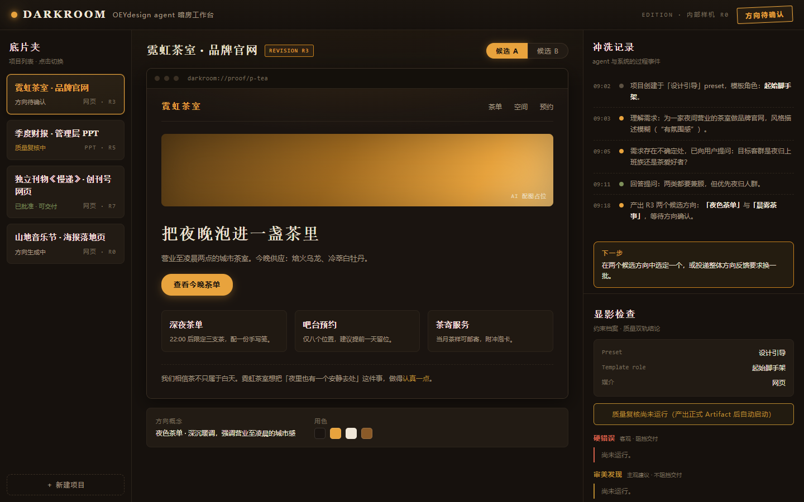
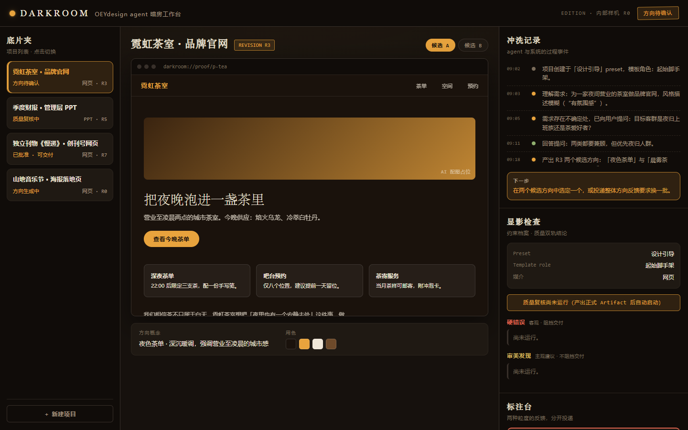
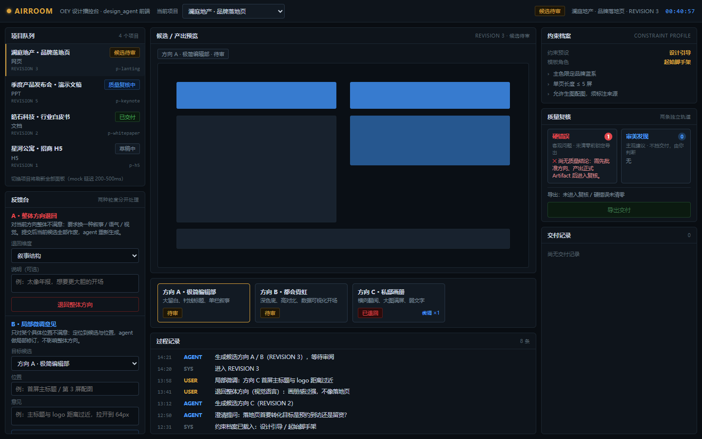
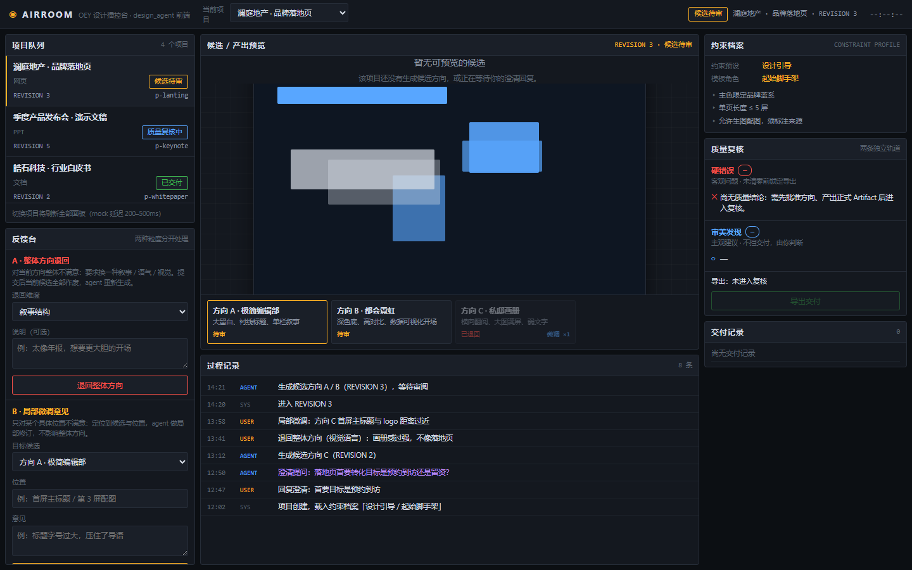
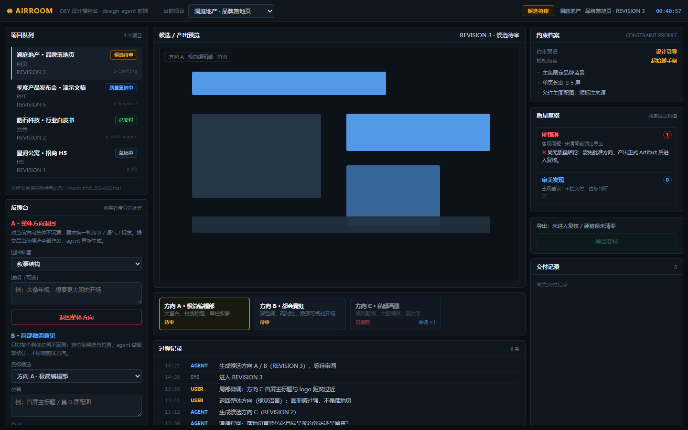

<!doctype html>
<html lang="zh-CN">
<head>
<meta charset="utf-8">
<title>D2/E2/Q2/Q3 人工审核页 -- OEYdesign agent 工作台候选</title>
<style>
body { font-family: -apple-system, "Segoe UI", "PingFang SC", sans-serif; margin: 0; padding: 0 0 60px; background: #f4f4f2; color: #1b1b1b; }
header.top { background: #111; color: #fff; padding: 20px 28px; position: sticky; top: 0; z-index: 10; }
header.top h1 { margin: 0 0 6px; font-size: 20px; }
header.top p { margin: 4px 0; font-size: 13px; line-height: 1.6; color: #f0d060; }
header.top .note { color: #ccc; }
nav.jump { padding: 10px 28px; background: #222; color: #ccc; font-size: 13px; }
nav.jump a { color: #9cf; margin-right: 14px; }
main { max-width: 1400px; margin: 0 auto; padding: 20px 28px; }
section.cand { background: #fff; border: 1px solid #ddd; border-radius: 8px; padding: 20px; margin-bottom: 28px; }
section.cand h2 { margin-top: 0; }
.axis { font-weight: normal; font-size: 14px; color: #555; margin-left: 10px; }
.hero { display: flex; gap: 20px; flex-wrap: wrap; }
.hero .final-shot { max-width: 560px; width: 100%; border: 1px solid #ccc; border-radius: 4px; }
.hero .meta { flex: 1; min-width: 300px; }
.hero pre { white-space: pre-wrap; font-size: 12px; background: #f7f7f5; border: 1px solid #eee; padding: 10px; max-height: 260px; overflow: auto; }
.rounds { display: flex; gap: 16px; overflow-x: auto; padding-bottom: 8px; }
.rounds figure.round { margin: 0; flex: 0 0 320px; }
.rounds figure.round img { width: 100%; border: 1px solid #ccc; border-radius: 4px; }
.rounds figcaption { font-size: 11px; color: #444; margin-top: 6px; line-height: 1.5; }
.rounds figcaption ul { margin: 4px 0 0; padding-left: 16px; }
table.findings { width: 100%; border-collapse: collapse; font-size: 13px; margin-top: 8px; }
table.findings th, table.findings td { border: 1px solid #ddd; padding: 6px 8px; text-align: left; vertical-align: top; }
table.findings th { background: #f0f0ee; }
tr.invalid-ref td:nth-child(2) { color: #b00; font-weight: bold; }
tr.valid-ref td:nth-child(2) { color: #076; }
.q3grid { display: flex; gap: 14px; overflow-x: auto; padding-bottom: 8px; }
.q3run { flex: 0 0 250px; background: #f7f7f5; border: 1px solid #eee; border-radius: 4px; padding: 10px; font-size: 12px; }
.q3run h4 { margin: 0 0 4px; }
.q3run ul { margin: 4px 0 0; padding-left: 16px; }
.missing { color: #a00; }
footer { max-width: 1400px; margin: 0 auto; padding: 10px 28px 40px; color: #777; font-size: 12px; }
</style>
</head>
<body>
<header class="top">
  <h1>D2 / E2 / Q2 / Q3 spike 物料 -- 待人工审核</h1>
  <p>以下内容待人工审核，agent 未做审美判断。本页只呈现物料与客观测得的指标（console error / 溢出
  数量 / target_ref 有效率 / 跨次重合度），不包含任何「哪个更好看」「修复是否变好」「审美发现对不对」
  「rubric 结论质量」的结论 -- 这些判断留给你。</p>
  <p class="note">方法与全部客观指标见同目录 RESULT.md。截图用相对路径引用，双击本文件在浏览器打开即可，
  不需要起服务器。</p>
</header>
<nav class="jump">跳转：
  <a href="#cand1">候选1 · 叙事</a>
  <a href="#cand2">候选2 · 版式</a>
  <a href="#cand3">候选3 · 色彩温度</a>
  <a href="#cand4">候选4 · 信息密度</a>
  <a href="RESULT.md">RESULT.md（客观指标全文）</a>
</nav>
<main>
<section class="cand" id="cand1">
  <h2>候选 1 <span class="axis">差异轴：叙事框架 / narrative metaphor</span></h2>
  <div class="hero">
    
    <div class="meta">
      <details open><summary>模型自述设计意图（INTENT.md 原文）</summary><pre># INTENT.md — 远航台 VOYAGE HELM

**差异轴：叙事框架。** 我为这一版选择的隐喻是「远洋航行的舰桥/驾驶台」：用户是船长，
design_agent 是船组。选择它的原因是 OEYdesign 的真实流程（生成多条候选方向 → 反馈/批准
→ 产出 → 双轨质量复核 → 交付）天然就是一段航程：候选方向即「候选航向」，整体反馈即
「改航线令」，局部反馈即「定点修补令」，硬错误即「暗礁警报」（挡住出港），审美发现即
「瞭望员笔记」（不挡港，船长自行判断），交付即「离港」。这套映射让两种反馈粒度、两类
质量结论这些领域规则不靠说明书就能被讲清楚，而不是给通用 dashboard 贴一层皮肤。

**产品命名**：远航台 · VOYAGE HELM——与 product-client 的「编辑部校样台」同一工作台、
另一套世界观。文案语气全程是航海号令式（发令、批示、挡港、离港），视觉用深海蓝 +
黄铜 + 印章式 REV 角标强化场景感。

**最能体现差异轴的三个位置**：
1. `hail-direction` 与 `hail-patch`：两种反馈粒度被写成「改航线令」与「局部修补令」，
   舱位分开、措辞分开，直观传达「换做法」与「微调」处理路径不同。
2. `ship-instruments` 的出港检查：硬错误 = 红色「暗礁警报」（lane 标注&quot;挡住出港&quot;），
   审美 = 琥珀「瞭望员笔记」（&quot;不挡出港，自行判断&quot;），双轨物理分栏，绝不合成一个分数。
3. `logbook` 的「下一舵令」：可执行操作被写成舵令（APV/HAIL/FIX/DLV），随项目状态机
   实时变化，把航海叙事从视觉层推进到交互措辞层。
</pre></details>
      <details><summary>Mock 声明（MOCK.md 原文）</summary><pre># MOCK.md — OEYdesign · 远航台 VOYAGE HELM mock 声明

本原型**没有任何真实后端**。所有数据与交互均由 `app.js` 内的前端 mock 层驱动，
技术方式为：**内联假数据 + `window.__mockApi__` 模拟客户端 + `setTimeout` 模拟网络延迟**。
未拦截/覆盖 `fetch`（页面本身不发起任何真实网络请求），未引用任何外部资源。

## 1. mock 的接口/交互点（window.__mockApi__）

| 方法 | 模拟的真实能力 | 延迟 |
|---|---|---|
| `listProjects()` | 项目列表加载（顶部航线切换下拉） | 260ms |
| `getProject(id)` | 项目切换后拉取该项目全量状态（日志/候选/约束/质量/档案） | 260ms |
| `submitDirectionFeedback(id, aspect, message)` | 整体方向反馈（「改航线令」）：换叙事/语气/视觉 | 700ms |
| `submitPatchFeedback(id, target, message)` | 局部内容反馈（「修补令」）：定点微调 | 500ms |
| `approveCandidate(id, candId)` | 批准某候选方向 → 产出 Artifact → 触发质量复核 | 900ms |
| `deliver(id)` | 质量通过后导出交付；有硬错误时返回 `{error:&quot;blocked&quot;}` | 600ms |
| `createProject(spec)` | 船坞视图创建新 demo 项目并加入切换列表 | 650ms |

## 2. 数据来源声明

### 纯虚构编造（手写内联在 `app.js` 的 `DB.projects` 中）
- 三个 demo 项目（极光咖啡着陆页 / Atlas 报告 PPT / 潮汐乐队纪录片网页）的：名称、
  编号、状态、约束 preset、模板角色、revision 号、候选方向文案、调色板、文件树、
  活动日志条目、反馈与交付记录、patchTargets 列表。
- 其中 Atlas 项目的质量结论（2 条硬错误 + 2 条审美发现）和潮汐项目的（0 硬错误 + 1 条
  审美发现）也是手写假数据，仅用于展示「硬错误 / 审美发现双轨分离」的呈现方式。
- 三个 preset（开放探索/设计引导/规范生产）与四个 template role（参考样例/起始脚手架/
  设计系统/交付合同）的名称取自 product-client/ 的真实信息架构，非虚构。

### 由规则/模板推导生成（非手写）
- `synthesizeCandidate(p, aspect, n)`：用户提交整体方向反馈或新建项目时，按反馈维度
  （叙事/语气/视觉/初始）从 `MOODS` 模板表选取标题句式、描述句式、首屏文案模板，再从
  `PALETTES` 三色调色板数组按候选序号取模选色，拼合成一条新候选。生成描述中会显式
  标注「响应『换X』改航线令」。
- `synthesizeQuality(p)`：批准候选后模拟质量引擎。**规则：revision 号为 3 的倍数时
  硬错误数为 0（可直接交付），否则产生 1 条硬错误**，硬错误/审美建议文案分别从
  `HARD_POOL` / `SOFT_POOL` 文案池中按 revision 取模选取。两条轨道始终分开存放、分开渲染，
  从不合成分数。
- 新建项目的编号：`&quot;VOY-&quot; + 序号推导`；文件名由项目名去空格小写化推导。
- 所有新产生的日志条目时间戳取浏览器当前时间（`HH:MM`）。

## 3. mock 技术手段
- **内联对象字面量**：`DB` 为单一内存数据库，页面刷新即重置，无 localStorage。
- **Promise + setTimeout**：每个 `__mockApi__` 方法返回 Promise，用 `setTimeout`
  模拟 260–900ms 的异步延迟，交互上有&quot;发令中……&quot;等过渡态。
- **真实可见的响应**：反馈提交后向活动日志追加条目、向航次档案追加记录、整体反馈会
  递增 revision 并真的新增一张候选卡片；批准会真的切换状态戳并填充双轨质量结论；
  交付在有硬错误时会被驳回（toast 提示）。
</pre></details>
    </div>
  </div>
  <h3>E2 自验证自修复：各轮截图</h3>
  <div class="rounds">
        <figure class="round">
          
          <figcaption>
            round 1 &middot;
            console error 1 &middot;
            warning 0 &middot;
            failed req 0 &middot;
            page error 0 &middot;
            overflow 0 &middot;
            load_ok True
            <p><b>模型提出 3 条问题</b>, 改了 1 个文件</p><ul><li>空航次/未选定航线状态下，发出改航线令与发出修补令仍是金色可点击样式，与航海日志中唯一可执行的 DOCK 舵令矛盾，应禁用并降权。</li><li>出港检查空态用绿色对勾配“无航次，未检”，容易被误读为质量已通过，应改为中性未检状态。</li><li>存在 1 个资源 404 console error（疑似 favicon 或外链资源），应内联图标或补齐资源以清零。</li></ul>
          </figcaption>
        </figure>
        <figure class="round">
          
          <figcaption>
            round 2 &middot;
            console error 0 &middot;
            warning 0 &middot;
            failed req 0 &middot;
            page error 0 &middot;
            overflow 0 &middot;
            load_ok True
            <p><b>模型提出 0 条问题</b>, 改了 0 个文件</p>
          </figcaption>
        </figure></div>
  <h3>Q2 审美发现（待人工审核：说得对不对）</h3>
  <p>发现数：4 &middot; 锚点有效率（客观测）：0%
        &middot; 维度覆盖：对比, 排版一致性, 留白节奏, 视觉层级</p>
        <table class="findings"><thead><tr><th>维度</th><th>target_ref</th><th>问题</th><th>建议</th></tr></thead>
        <tbody><tr class="invalid-ref">
              <td>视觉层级</td>
              <td>logbook &#10007;</td>
              <td>空态下页面最大的视觉区域是中央空白的海图桌（仅有小号置灰提示文字），而此刻真正需要用户执行的唯一动作「[DOCK] 去船坞登记新航次」只是左栏里一个中等对比度的按钮，首眼焦点落在无内容区域而非主行动上。</td>
              <td>可以考虑在海图桌空态中央直接放置主行动入口（如「登记新航次」舵令按钮），或提升 logbook 中 DOCK 按钮的填充对比度，让首屏焦点与状态机要求的下一步对齐。</td>
            </tr><tr class="invalid-ref">
              <td>对比</td>
              <td>ship-instruments &#10007;</td>
              <td>空态下「暗礁警报·硬错误」卡片仍以红色描边加红色标题呈现，但卡内实际内容是中性信息「无航次，未检」——当前并没有任何警报，红色却是全屏最抢眼的颜色信号，颜色语义与实际状态冲突，也容易与琥珀色的瞭望员笔记形成虚假的双轨对比。</td>
              <td>可以考虑空态（未检）时将该卡降为中性灰蓝描边，仅在检出硬错误时启用红色，让颜色对比真正承载「有/无警报」的状态信息。</td>
            </tr><tr class="invalid-ref">
              <td>留白节奏</td>
              <td>ship-instruments &#10007;</td>
              <td>右栏在「航次档案·反馈与交付」之后留有大段无内容空白，而左栏三个舱位几乎铺到屏幕底部，两栏的纵向密度明显不平衡，右侧下方的大面积暗色空区看起来像未完成的布局而非有意留白。</td>
              <td>可以考虑让右栏四个区块纵向弹性均分填满栏高，或将「航次档案」区块向下延展，使左右两栏的收边位置接近，让疏密差异显得有意图。</td>
            </tr><tr class="invalid-ref">
              <td>排版一致性</td>
              <td>hail-patch &#10007;</td>
              <td>局部修补舱的说明文字「先挂旗并选定航线后，才能发出局部修补令」与下拉框空态文案「（先选定航线）」信息重复，且两个喊话舱的输入控件形态不一致（改航线舱用 chips 加文本框，修补舱用下拉加文本框），空态下两种禁用/提示的表达方式也不统一。</td>
              <td>可以考虑统一两舱空态的提示策略（例如都只在输入框 placeholder 中提示一次），或让下拉的空态选项文案与说明文字互补而非复述，使两个同级舱位的排版节奏更一致。</td>
            </tr></tbody></table>
  <h3>Q3 rubric 跨次稳定性（同一张截图重复评估 5 次，待人工审核：哪次更准）</h3>
  <p>维度覆盖跨次平均 Jaccard 重合度（客观测）：0.40 &middot;
        target_ref 跨次平均 Jaccard 重合度（客观测）：0.30 &middot;
        维度交集：</p>
        <div class="q3grid"><div class="q3run">
              <h4>run 1</h4>
              <p>8 条 &middot; 维度 对比, 意图契合, 排版一致性, 留白节奏, 视觉层级</p>
              <ul><li>[视觉层级] 海图桌·候选与校样（中央空态面板）: 页面面积最大的中央区域在空态下只有一枚罗盘图标和一行灰字，视觉权重最大却信息最少；相反顶部右侧的「驾驶台」按钮以实心黄铜</li><li>[视觉层级] 航海日志·下一舵令 [DOCK]: INTENT 自述把「下一舵令」列为最能体现差异轴的三处之一，但在侧栏中它只是小号字标签加一个次级样式的胶囊按钮，与普通</li><li>[留白节奏] 喊话·要求改航线 / 喊话·局部修补 卡片组: 左侧两张喊话卡片内部文本、快捷按钮、输入框、提交按钮均匀堆叠，块与块间距近似相同，读不出「说明文字—快捷选项—自由输入—</li><li>[对比] 出港检查·质量复核（暗礁警报 vs 瞭望员笔记）: 红/琥珀双色的功能区分清晰，契合双轨设计；但两条卡片标题字号与正文字号非常接近，标题与「— 无航次，未检」正文之间的大小</li><li>[排版一致性] 瞭望员笔记·审美发现 卡片标题: 该标题因含长括号「（不挡出港，自行判断）」在卡片内断行成三行，括号内的「断」字孤字坠行，与上方暗礁警报卡片单行标题的排版</li><li>[排版一致性] 顶部状态条（当前航次 / 切换航线 / 锚泊中·无航次）: 顶部三组控件（徽章式标签、下拉选择框、状态点文字）基线、内边距和字重各不相同，混排在同一行内显得阶调不统一；「当前航次 </li><li>[意图契合] 海图桌中央空态文案与图标: INTENT 强调「航海号令式」文案贯穿到交互措辞层，但中央空态文案「海图桌空着。在左上方选定一条航线……」是平铺的说明</li><li>[意图契合] REV — 印章角标: 印章式 REV 角标是自述的视觉签名，位置与黄铜描边处理得当；但在空态下角标内只有「REV —」占位符，与空态海图桌之间</li></ul>
            </div><div class="q3run">
              <h4>run 2</h4>
              <p>6 条 &middot; 维度 对比, 意图契合, 排版一致性, 留白节奏, 视觉层级</p>
              <ul><li>[视觉层级] ship-instruments: 出港检查区在「无航次、未检」的空态下，仍以高饱和红色渲染「暗礁警报·硬错误（挡住出港）」整块卡片，是右栏最抢眼的元素；但</li><li>[视觉层级] logbook: 「下一舵令」是自述中叙事推进到交互层的关键位置，但 [DOCK] 按钮的样式与普通表单按钮几乎一致（同样细描边、同样字重</li><li>[留白节奏] hail-direction: 左栏两张喊话卡片在禁用态下说明文字、快捷按钮、输入框、提交按钮全部铺满，信息密度很高；而相邻的航海日志卡片只有一行状态加</li><li>[对比] hail-patch: 自述强调两种反馈粒度「舱位分开、措辞分开」以传达处理路径不同，但「喊话·要求改航线」与「喊话·局部修补」两张卡片在布局、</li><li>[排版一致性] ship-instruments: 右栏各板块的空态占位写法不统一：载货清单用「（空仓）」、航行令用「航行令 —」、航次档案用「尚无交付」、出港检查用「— </li><li>[意图契合] ship-instruments: 自述中「暗礁警报」的叙事语义是真实挡住出港的礁石，但当前空态下它以警报色常驻，等于港口里永远漂着一块红礁石，与「无航次、</li></ul>
            </div><div class="q3run">
              <h4>run 3</h4>
              <p>0 条 &middot; 维度 </p>
              <ul><li>(无)</li></ul>
            </div><div class="q3run">
              <h4>run 4</h4>
              <p>0 条 &middot; 维度 </p>
              <ul><li>(无)</li></ul>
            </div><div class="q3run">
              <h4>run 5</h4>
              <p>0 条 &middot; 维度 </p>
              <ul><li>(无)</li></ul>
            </div></div>
</section>
<section class="cand" id="cand2">
  <h2>候选 2 <span class="axis">差异轴：版式结构 / layout &amp; information architecture</span></h2>
  <div class="hero">
    
    <div class="meta">
      <details open><summary>模型自述设计意图（INTENT.md 原文）</summary><pre># INTENT.md — 环线 THE LOOP

**差异轴：版式结构。** 我放弃左中右三栏，选择「单轴纵深叙事流」：整屏只有一条居中的垂直主线，像读一份按时间展开的记录。顶部横带是唯一的「岔路口」——切换项目 = 换一条环线来读，整条主线随之整体换内容。核心任务的路径因此改变：看候选就是读主线的第一站；给反馈不是去某个固定侧栏，而是在主线中段「写下一步」——方向级反馈（橙色站点，推翻重做）和局部批注（青色站点，可点预览区块直接定位）是两个先后相邻、语气完全不同的站点；质量与交付则是主线的收尾站点，读到那里自然看到结论。

**命名与定位：** 「环线 THE LOOP」——把 project 的一生（提问→候选→反馈→复核→交付）视为一条可回读的环，每次反馈都让环线多绕一圈、留下新的事件。配色为暗色油墨底 + 信号橙（行动）/ 青（微调）/ 红（硬错误）/ 琥珀（审美建议）。

**最能体现差异轴的位置：**
1. `project-rail` + 单轴主线：切换项目改变的是整条叙事，而非某个面板。
2. `feedback-direction` 与 `feedback-local`：两种反馈粒度是主线上两个相邻站点，且局部反馈可点击 `stage` 预览中的区块直接定位，把「看」和「批注」缝在一条纵向路径上。
3. `quality` 双轨：硬错误与审美发现并排两轨、闸门独立，顺着主线读到结尾自然理解「能不能交付」。
</pre></details>
      <details><summary>Mock 声明（MOCK.md 原文）</summary><pre># MOCK.md — 环线 THE LOOP 的 mock 声明

本原型**没有任何真实后端**。所有数据与交互都在浏览器内完成，刷新页面后一切回到初始状态。

## 技术手段

- **内联数据数组**：`data.js` 在 `window.__OEP_DATA__` 上挂了 3 个虚构项目的完整数据（普通 JS 对象数组）。
- **假客户端**：`api.js` 暴露 `window.__mockApi__`，界面层（`app.js`）只通过它读写数据，模拟真实前端的 API 边界。
- **setTimeout 模拟延迟**：`__mockApi__` 的每个方法都 `await` 一段 160–400ms 的随机延迟，模拟网络往返。
- **无 fetch 拦截**：没有覆盖 `window.fetch`，因为没有发起任何真实请求。

## mock 的接口 / 交互点

| 方法 | 用途 | 数据来源 |
|---|---|---|
| `listProjects()` | 顶部项目横带 | 纯虚构：3 个手写项目（网页 / PPT / 文档各一），字段结构参照 product-client 的信息架构（项目状态、可切换），内容本身与真实仓库无关 |
| `getProject(id)` | 项目详情：预览、事件、约束、质量、交付 | 纯虚构：每个项目的预览文案、事件流水、约束规则、质量结论均为手写编造的 demo 内容 |
| `submitDirectionFeedback(id, text)` | 整体方向反馈 | **规则推导**：把用户文本追加进 `feedbackLog`（类型「整体方向」）和 `events`（追加 2 条：用户批注 + agent 回应），并把项目状态改为「方向重审中」 |
| `submitLocalFeedback(id, region, text)` | 局部内容反馈 | **规则推导**：追加 `feedbackLog`（类型「局部微调」）和 `events`（2 条），项目状态不变，体现「方向保留、只微调一处」的语义差异 |
| `createProject({name, preset, role})` | 新案子表单 | **规则推导**：按固定模板生成「刚起步」的项目骨架——revision 0、无预览（触发空状态）、3 条种子事件（含 agent 主动提问，呼应 PRD 中「信息不确定时主动提问」）、空质量结论、空交付记录 |
| 预览区块点选 | 局部反馈定位 | 纯前端行为：点击 `[data-region]` 元素即设置反馈表单位置下拉框，无数据层参与 |

## 与事实的对应关系（未 mock 出不存在的功能）

- 反馈分「整体方向 / 局部微调」两种粒度 → 两个独立入口 + 两条不同的数据变更路径。
- 质量结论分「硬错误（挡交付）/ 审美发现（不挡交付）」→ 两条独立轨道渲染，交付闸门状态仅由硬错误数量推导，**没有合并成分数**。
- 流程「候选 → 反馈/批准 → Artifact → 复核 → 导出」→ 仅作为事件流和交付记录的文案呈现，没有实现真实生成或复核逻辑。
- 持久化（SQLite）、stub 适配器等真实实现细节 → 未在界面中声称存在。
</pre></details>
    </div>
  </div>
  <h3>E2 自验证自修复：各轮截图</h3>
  <div class="rounds">
        <figure class="round">
          
          <figcaption>
            round 1 &middot;
            console error 1 &middot;
            warning 0 &middot;
            failed req 0 &middot;
            page error 0 &middot;
            overflow 0 &middot;
            load_ok True
            <p><b>模型提出 3 条问题</b>, 改了 1 个文件</p><ul><li>「开一个新案子」对话框在页面加载时就默认处于打开状态，遮挡了单轴主线内容，初始应为关闭、由按钮触发</li><li>页面存在 1 条 404 资源加载失败的 console error，引用了不存在的资源文件，应移除或改为内联</li><li>对话框打开时主线第一站（stage 候选预览）被遮罩压住，无法在首屏读到候选，违背「看候选就是读主线第一站」的意图</li></ul>
          </figcaption>
        </figure>
        <figure class="round">
          
          <figcaption>
            round 2 &middot;
            console error 0 &middot;
            warning 0 &middot;
            failed req 0 &middot;
            page error 0 &middot;
            overflow 0 &middot;
            load_ok True
            <p><b>模型提出 0 条问题</b>, 改了 0 个文件</p>
          </figcaption>
        </figure></div>
  <h3>Q2 审美发现（待人工审核：说得对不对）</h3>
  <p>发现数：3 &middot; 锚点有效率（客观测）：100%
        &middot; 维度覆盖：意图契合, 留白节奏, 视觉层级</p>
        <table class="findings"><thead><tr><th>维度</th><th>target_ref</th><th>问题</th><th>建议</th></tr></thead>
        <tbody><tr class="valid-ref">
              <td>视觉层级</td>
              <td>feedback-local &#10003;</td>
              <td>站点标题「只有一处硌眼？」字号很大、视觉重量最高，但真正承载操作意图的「位置」定位器（首屏主视觉 · hero 下拉框）很小且对比弱，用户的视线落点被标题吸走后，要重新搜索才能找到定位入口；定位本是这一站的核心动作。</td>
              <td>可以考虑让定位控件的视觉权重与它的操作重要性更匹配，例如加大定位器的尺寸或给它更明确的强调样式，让「定位→描述→提交」的动作链成为该站点的视觉主线。</td>
            </tr><tr class="valid-ref">
              <td>留白节奏</td>
              <td>feedback-local &#10003;</td>
              <td>「位置」标签与下方下拉框之间间距偏紧，而下拉框与批注输入框之间又突然拉得很开，三个表单元素之间的疏密节奏不一致，读起来像两个割裂的块而非一条连贯的操作流。</td>
              <td>可以考虑梳理标签、定位器、输入框之间的间距阶，让表单内部节奏与页面上其他站点（如方向反馈站）的表单间距保持一致或有意区分。</td>
            </tr><tr class="valid-ref">
              <td>意图契合</td>
              <td>feedback-local &#10003;</td>
              <td>意图自述强调局部批注可点击 stage 预览区块直接定位、把「看」和「批注」缝在一条纵向路径上，但在 feedback-local 站点内，定位结果只呈现为一个普通下拉框（首屏主视觉 · hero），没有任何视觉元素表明它与上方预览区块的联动关系（如高亮标记、缩略提示或「来自预览点击」的状态），缝合理念在此处落成了一个常规表单控件。</td>
              <td>可以考虑在定位器上增加与预览区块呼应的视觉线索，例如选中态的青色描边标记、区块名称旁的「从预览定位」提示，或点击下拉时同步高亮预览对应区块，让「点预览→定位到批注」的闭环在这一站可见。</td>
            </tr></tbody></table>
  <h3>Q3 rubric 跨次稳定性（同一张截图重复评估 5 次，待人工审核：哪次更准）</h3>
  <p>维度覆盖跨次平均 Jaccard 重合度（客观测）：0.65 &middot;
        target_ref 跨次平均 Jaccard 重合度（客观测）：1.00 &middot;
        维度交集：意图契合, 视觉层级</p>
        <div class="q3grid"><div class="q3run">
              <h4>run 1</h4>
              <p>3 条 &middot; 维度 对比, 意图契合, 视觉层级</p>
              <ul><li>[意图契合] feedback-local: 自述意图强调局部批注可以「点击 stage 预览中的区块直接定位」，把看与批注缝在一条纵向路径上；但该站点实际只呈现一个</li><li>[视觉层级] feedback-local: 站点内部元素的层级排序有些含糊：说明文字、「位置」标签、下拉框、大面积空 textarea 与青色按钮在尺寸和重量上接近</li><li>[对比] feedback-local: 「位置」下拉框与 textarea 都使用深色底 + 细描边，二者之间以及与背景之间的明度差很小，控件的可交互边界不够清</li></ul>
            </div><div class="q3run">
              <h4>run 2</h4>
              <p>3 条 &middot; 维度 意图契合, 排版一致性, 视觉层级</p>
              <ul><li>[视觉层级] feedback-local: 「只改这一处」按钮与上一站「推翻这个方向，重做」在尺寸、圆角、填充样式上几乎同构，仅靠青/橙颜色区分轻重，导致局部微调这</li><li>[意图契合] feedback-local: 意图自述强调「可点预览区块直接定位、把看和批注缝在一条纵向路径上」，但截图中本站内定位入口实际是一个「首屏主视觉 · h</li><li>[排版一致性] feedback-local: 站内「位置」标签、下拉框、文本域、按钮之间的纵向间距接近均等，而标题区（eyebrow / 大标题 / 说明行）的间距阶</li></ul>
            </div><div class="q3run">
              <h4>run 3</h4>
              <p>3 条 &middot; 维度 对比, 意图契合, 视觉层级</p>
              <ul><li>[视觉层级] feedback-local: 该站点的核心交互「直接点预览区块定位」目前只以一行灰色说明文字呈现（『可以直接点预览里的区块来定位』），视觉重量低于其下</li><li>[意图契合] feedback-local: 设计意图强调局部批注可点预览区块直接定位、把『看』和『批注』缝在一条纵向路径上，但当前站点内位置信息只表现为一个普通的「</li><li>[对比] feedback-local: 意图称方向级反馈与局部批注是『语气完全不同的两个站点』，但「只改这一处」按钮与上一站「推翻这个方向，重做」按钮在形状、尺</li></ul>
            </div><div class="q3run">
              <h4>run 4</h4>
              <p>3 条 &middot; 维度 对比, 意图契合, 视觉层级</p>
              <ul><li>[视觉层级] feedback-local: 该站点里最承担「定位」功能的「位置」下拉框（首屏主视觉 · hero）视觉上却是最弱的元素：尺寸小、描边灰、几乎与背景融</li><li>[对比] feedback-local: 正文说明里的「局部内容」用了青色高亮，但同一句里其余文字与说明整体都是低对比灰白，且下拉框、文本域、按钮三者的青色使用程</li><li>[意图契合] feedback-local: 意图自述强调「可点 stage 预览中的区块直接定位，把看和批注缝在一条纵向路径上」，但该站点内目前只有一个孤立的下拉框</li></ul>
            </div><div class="q3run">
              <h4>run 5</h4>
              <p>3 条 &middot; 维度 意图契合, 留白节奏, 视觉层级</p>
              <ul><li>[意图契合] feedback-local: 自述强调「局部反馈可点击 stage 预览中的区块直接定位，把看和批注缝在一条纵向路径上」，但到达本站后，定位结果只体现</li><li>[视觉层级] feedback-local: 站内最重的视觉重量落在了大面积的空白文本域上，而真正承载定位信息的「位置」下拉框字号小、对比弱、被挤在文本域上方不显眼处</li><li>[留白节奏] feedback-local: 文本域高度较大且为空，与下方「只改这一处」按钮之间隔着一段与站内其它间距不成比例的空白，导致按钮像是悬在站点底部、与表单</li></ul>
            </div></div>
</section>
<section class="cand" id="cand3">
  <h2>候选 3 <span class="axis">差异轴：色彩温度与基调 / color temperature &amp; mood</span></h2>
  <div class="hero">
    
    <div class="meta">
      <details open><summary>模型自述设计意图（INTENT.md 原文）</summary><pre># INTENT.md

## 差异轴选择：色彩温度与基调

我选的方向是**深色沉浸 + 暖色温**，具体化为「暗房安全灯」基调：背景不是中性灰黑而是带棕意的暖黑（#16110d），卡片、描边、文字全部暖化（文字是暖白纸感 #f0e7d8 而非纯白），唯一强调色是琥珀色（#e8a33d），模拟暗房里那盏不曝光底片的橙色安全灯。功能色也服从暖调：硬错误用暖红、审美发现用暗金、可交付用苔绿，没有冷蓝色出现。状态戳做成微微倾斜的印章样式，配合衬线展示字体（Georgia/宋体系），让工具感里带一点手工温度。

## 命名与定位

产品名 **DARKROOM（暗房）**。叙事隐喻：项目是「底片夹」，agent 产出过程是「冲洗记录」，预览区是「放大机」，质量复核是「显影检查」，反馈是「标注」。隐喻只停留在栏目命名和氛围层，功能语义严格对齐 OEYdesign 真实流程（候选方向→反馈→Artifact→双轨质量→交付闸口），两种反馈粒度分开成两个表单，硬错误与审美发现分两轨展示。

## 最能体现差异轴的位置

1. **整体底色与发光细节**（`topbar` 的品牌灯点、`preview` 区顶部的琥珀色径向微光）：暗房氛围靠这些「光源」而非大块色彩建立。
2. **状态与质量配色**（`quality` 区的 gate 闸口条、硬错误/暗金双轨、`topbar.status` 印章）：功能色全部暖化，红是金红、绿是苔绿，冷色缺席。
3. **纸感文字对比**（全站 #f0e7d8 暖白文字配衬线标题，`preview` 内嵌假网页也各自带暖调配色方案）：可读对比度保持在暖色系内解决，而不是退回纯白。
</pre></details>
      <details><summary>Mock 声明（MOCK.md 原文）</summary><pre># MOCK.md — DARKROOM 工作台 mock 声明

本原型没有任何真实后端。所有数据与交互由前端内置 mock 层驱动，技术栈为原生 HTML/CSS/JS，零外部依赖（无 CDN、无外链字体/图片/图标）。

## 一、mock 的接口 / 交互点

mock 客户端挂在 `window.__oeyMock__` 上，共 6 个方法，全部返回 Promise：

| 方法 | 模拟的真实接口 | 说明 |
|---|---|---|
| `listProjects()` | 获取项目列表 | 返回全部项目摘要 |
| `getProject(id)` | 获取单个项目详情 | 项目切换时调用，界面各区域随返回值整体重绘 |
| `selectCandidate(projectId, candidateId)` | 切换候选/校样 | 切换预览，并向活动记录追加一条「查看了某候选」事件 |
| `submitDirectionFeedback(projectId, payload)` | 提交整体方向反馈 | 写入反馈日志、把项目状态改为「已提交方向反馈」、revision +1、追加两条活动事件（用户投递 + agent 确认换方向） |
| `submitLocalFeedback(projectId, payload)` | 提交局部微调反馈 | 写入反馈日志、追加两条活动事件、更新「下一步」提示；不改变项目状态与 revision（模拟「原位微调不打断流程」） |
| `createProject(data)` | 创建新项目 | 按提交的 preset / template role 生成一个空项目（无候选、质量未运行、状态为「方向生成中」），并自动选中 |

界面上的真实可见响应：项目切换后中栏预览、右栏活动记录/质量/反馈日志全部变化；提交反馈后按钮出现「投递中…」loading 态、toast 确认、活动记录新增事件、状态戳变色、revision 号递增（仅方向反馈）。

## 二、数据来源声明

1. **四个内置项目（霓虹茶室官网 / 季度财报 PPT / 《慢递》创刊号 / 山地音乐节落地页）**：全部为**纯虚构编造**的演示数据，包括项目名、候选方向概念、假网页文案、活动记录、质量结论、既有反馈日志。不来自任何真实仓库数据；仅流程语义参照 OEYdesign 的真实领域模型（候选方向 → 反馈/批准 → Artifact → 双轨质量复核 → 导出）。
2. **预览中的「网页」**：由内联的 page 描述对象（背景色/强调色/标题/卡片/正文等字段）经 `pageHTML()` 模板函数渲染成 DOM，属**规则推导**（数据 + 固定模板），不是截图或外链。配图位置用 CSS 渐变块表示，标注「AI 配图占位」，对应 prd 中「必要时用生图能力配图」的事实，不假装有真实图片。
3. **质量结论**：硬错误与审美发现是两个独立数组，分开渲染、分开配色，从不合并成分数。内容为虚构；「交付闸口」状态按规则推导：`quality.ran === false` → 未运行；`hard.length &gt; 0` → 闸口关闭；否则 → 闸口打开。
4. **时间戳**：内置种子活动记录的时间是虚构的固定字符串（如 &quot;09:18&quot;）；**用户交互产生的新事件**（查看候选、提交反馈、新建项目）的时间由 `new Date()` 按 `HH:MM` 规则生成，属规则推导。
5. **新建项目**：除用户输入的名称/preset/role 外，其余字段（空候选、初始活动事件、「方向生成中」状态）由 `createProject` 内的固定模板生成，属规则推导。

## 三、mock 技术手段

- **内联内存数据库**：`app.js` 顶部的 `DB` 对象，所有读写直接在内存数组上进行，页面刷新即重置。
- **setTimeout 模拟延迟**：`delay()` 函数包装所有 mock 方法（120ms–700ms 不等，反馈提交类操作延迟更长，以露出 loading 态）。
- **假客户端暴露**：`window.__oeyMock__` 全局可访问，方便后续替换成真实 API 时对照接口形状；UI 层只通过该客户端取数，不直接读 `DB`（渲染函数除外）。
- **未使用** fetch 拦截 / ServiceWorker / localStorage；无任何网络请求。
</pre></details>
    </div>
  </div>
  <h3>E2 自验证自修复：各轮截图</h3>
  <div class="rounds">
        <figure class="round">
          
          <figcaption>
            round 1 &middot;
            console error 1 &middot;
            warning 0 &middot;
            failed req 0 &middot;
            page error 0 &middot;
            overflow 0 &middot;
            load_ok True
            <p><b>模型提出 4 条问题</b>, 改了 1 个文件</p><ul><li>存在 1 条 404 console error：页面引用了不存在的外部资源（ favicon 或外链字体/图片），应改为内联 data URI 或去除外部依赖</li><li>预览区内嵌假网页的说明段落「我们相信茶不只属于白天…这件事，做」在容器边界处被裁断，文字不完整</li><li>冲洗记录 09:18 事件的文本「产出 R3 两个候选方向：「夜色茶单」与「晨雾茶」在结尾处被截断，引号未闭合、方向名不完整</li><li>标注台区域在 900px 视口高度下被完全挤出首屏且右栏无独立滚动，两种粒度的反馈表单不可见不可操作</li></ul>
          </figcaption>
        </figure>
        <figure class="round">
          
          <figcaption>
            round 2 &middot;
            console error 0 &middot;
            warning 0 &middot;
            failed req 0 &middot;
            page error 0 &middot;
            overflow 0 &middot;
            load_ok True
            <p><b>模型提出 0 条问题</b>, 改了 0 个文件</p>
          </figcaption>
        </figure></div>
  <h3>Q2 审美发现（待人工审核：说得对不对）</h3>
  <p>发现数：3 &middot; 锚点有效率（客观测）：100%
        &middot; 维度覆盖：对比, 意图契合, 视觉层级</p>
        <table class="findings"><thead><tr><th>维度</th><th>target_ref</th><th>问题</th><th>建议</th></tr></thead>
        <tbody><tr class="valid-ref">
              <td>视觉层级</td>
              <td>projects.item.status &#10003;</td>
              <td>列表中各项目的状态文字（方向待确认 / 质量复核中 / 已批准·可交付 / 方向生成中）全部是同一低饱和暖灰小字，彼此无色彩区分；其中「已批准·可交付」是流程上的关键节点，却没有用上自述中的苔绿可交付色，扫视列表时无法先看到哪个项目已到达交付闸口。</td>
              <td>可以考虑让状态文字承接自述的暖调功能色体系：可交付用苔绿、待确认用琥珀、生成中用暗金，让状态本身成为列表里的第一阅读层级。</td>
            </tr><tr class="valid-ref">
              <td>对比</td>
              <td>projects.item.name &#10003;</td>
              <td>项目名称与下方状态行的字号、粗细差距很小，长名称（如「独立刊物《慢递》·创刊号网页」）折成两行后，名称块与状态行的视觉权重几乎持平，卡片内部缺少明确的主次对比，每张卡片读起来是一团相近灰度的文字。</td>
              <td>可以考虑把名称与状态之间的字号阶或字重阶拉得更开（例如名称加粗或上调一级字号、状态再降一级灰度），让卡片内先读到名字、再读到状态。</td>
            </tr><tr class="valid-ref">
              <td>意图契合</td>
              <td>projects.item.status &#10003;</td>
              <td>INTENT.md 自述「状态戳做成微微倾斜的印章样式」，这一处理在顶栏「方向待确认」上有体现，但 projects.item.status 仍是普通的左对齐小字，没有任何印章感（无描边、无倾斜、无戳记容器），同一语义在界面里出现了两种不一致的视觉表达，暗房手工温度的叙事在列表层断掉了。</td>
              <td>可以考虑把项目状态也收敛到印章语言上（如细描边小戳、轻微旋转），或反过来统一为纯文字并仅在顶栏保留印章，让「状态戳」这一意图在全站保持一致。</td>
            </tr></tbody></table>
  <h3>Q3 rubric 跨次稳定性（同一张截图重复评估 5 次，待人工审核：哪次更准）</h3>
  <p>维度覆盖跨次平均 Jaccard 重合度（客观测）：0.82 &middot;
        target_ref 跨次平均 Jaccard 重合度（客观测）：0.87 &middot;
        维度交集：对比, 意图契合, 排版一致性</p>
        <div class="q3grid"><div class="q3run">
              <h4>run 1</h4>
              <p>4 条 &middot; 维度 对比, 意图契合, 排版一致性, 视觉层级</p>
              <ul><li>[视觉层级] projects.item.status: 选中卡片里项目名称与状态「方向待确认」使用了同样的琥珀色高亮，两处焦点并列，状态作为辅助信息抢走了名称应有的第一层级；未</li><li>[对比] projects.item.status: 未选中卡片的状态文字（如「质量复核中」「方向生成中」）为小号灰色，压在暖黑卡片底色上，明度对比偏弱，快速扫视时几乎隐没，</li><li>[排版一致性] projects.item.name: 「独立刊物《慢递》·创刊号网页」因过长折成两行，且折行后第二行与下方状态文字间距很紧，而其余项目均为一行，导致卡片高度与</li><li>[意图契合] projects.item.status: INTENT.md 自述状态戳要做成「微微倾斜的印章样式」以带出手工温度，但底片夹列表中的状态只是普通文本标签，没有任何</li></ul>
            </div><div class="q3run">
              <h4>run 2</h4>
              <p>3 条 &middot; 维度 对比, 意图契合, 排版一致性</p>
              <ul><li>[排版一致性] projects.item.name: 四个项目卡片中，「独立刊物《慢递》·创刊号」因名称过长折成两行且行距偏紧，其余三项为单行，导致卡片高度与内部节奏不一致，</li><li>[对比] projects.item.status: 「方向待确认」「质量复核中」「已批准·可交付」「方向生成中」四种状态在字号、粗细、明度上几乎一致，阻挡交付的关键状态（如</li><li>[意图契合] projects.item.status: 意图自述中「状态戳做成微微倾斜的印章样式」「可交付用苔绿」，但项目列表内的状态是纯平铺小字，没有印章式处理，「已批准·可</li></ul>
            </div><div class="q3run">
              <h4>run 3</h4>
              <p>5 条 &middot; 维度 对比, 意图契合, 排版一致性, 留白节奏, 视觉层级</p>
              <ul><li>[视觉层级] preview.empty: 大面积高饱和琥珀色占位块是预览区最醒目的元素，视觉重量超过下方的主标题与行动按钮，容易让用户先注意到占位区域而非页面内容</li><li>[留白节奏] projects.item.name: 「独立刊物《慢递》·创刊号网页」换行为两行，而其他项目名称均为一行，使第三个项目卡片的高度与左侧列表节奏突然变化。</li><li>[对比] projects.item.status: 状态文字字号较小，其中「方向生成中」等低亮度状态与深色卡片背景的区分偏弱，扫读项目列表时不容易快速识别。</li><li>[排版一致性] projects.item.name: 长项目名称在「创刊号」与「网页」之间换行，媒介词被单独留在第二行，语义分组显得偶然，也与下方重复的「网页 · R7」元信</li><li>[意图契合] preview.empty: 占位块呈现为较平坦的大面积琥珀色填充，更接近普通警示色块，与自述中依靠细腻光源和径向微光建立「暗房安全灯」氛围的意图略有</li></ul>
            </div><div class="q3run">
              <h4>run 4</h4>
              <p>4 条 &middot; 维度 对比, 意图契合, 排版一致性, 视觉层级</p>
              <ul><li>[对比] projects.item.status: 项目列表中的状态文字（如「质量复核中」「方向生成中」）字号很小且用的是低饱和的暗金/苔绿，与卡片暖黑底色的明度差偏小，扫</li><li>[排版一致性] projects.item.name: 项目名长度不一导致换行行为不统一（如「独立刊物《慢递》·创刊号网页」折成两行），各行卡片高度与「项目名—状态」两行的间距</li><li>[意图契合] projects.item.status: INTENT 自述状态戳采用「微微倾斜的印章样式」，截图中只有 topbar 的「方向待确认」呈现了印章式处理，而项目列</li><li>[视觉层级] projects.item.name: 选中项「霓虹茶室·品牌官网」的项目名用了琥珀强调色，但该颜色与顶部主标题、「候选 A」按钮、时间线事件点共用同一强调色，</li></ul>
            </div><div class="q3run">
              <h4>run 5</h4>
              <p>4 条 &middot; 维度 对比, 意图契合, 排版一致性, 视觉层级</p>
              <ul><li>[视觉层级] projects.item.name: 底片夹列表中项目名是最重要的识别信息，但与卡片内的次要元信息（状态、网页·R3）在字号和粗细上拉不开差距；未选中项的名称</li><li>[对比] projects.item.status: 列表中「方向待确认」「质量复核中」「已批准·可交付」「方向生成中」四种状态全部使用同一颜色、同一字号的普通小字，状态语义</li><li>[排版一致性] projects.item.name: 「独立刊物《慢递》·创刊号网页」因名称过长折成两行，其余项目名均为单行，导致各项目卡片的高度和内部节奏不一致，列表的纵向</li><li>[意图契合] projects.item.status: INTENT 自述状态戳要做成「微微倾斜的印章样式」，这一处理在顶栏的「方向待确认」上有体现，但底片夹列表内的状态文字仍</li></ul>
            </div></div>
</section>
<section class="cand" id="cand4">
  <h2>候选 4 <span class="axis">差异轴：信息密度与节奏 / information density &amp; rhythm</span></h2>
  <div class="hero">
    
    <div class="meta">
      <details open><summary>模型自述设计意图（INTENT.md 原文）</summary><pre># INTENT.md

## 差异轴选择：高密度 · 专业工具取向

我把密度推到「播控台 / 监控席」一侧：一屏三列六面板同时常驻，不折叠、不分页，让操作者像盯播出信号一样同时看到项目队列、候选画面、事件流、约束、双轨质量和交付状态。具体落实：

- **项目列表**：每项 4 行信息（名称 / 类型+状态戳 / REVISION+ID），密排可滚动，不做卡片留白。
- **过程记录**：单行三栏（时间 / 角色 / 内容）电报式排布，11.5px 字号，一屏可扫 15+ 条。
- **候选预览**：中列最大面积给主画布，下方横向候选条一卡 190px，状态、微调意见数直接印在卡上。
- **约束与质量**：右列 320px 内塞入三个面板；质量刻意拆成红/蓝两个 track 块并排计数，从版式上物理防止&quot;混成一个分数&quot;。

反密度决策只有一处：反馈台的两个表单用文字明确区分&quot;退回整体 / 局部微调&quot;的不同后果，因为这里是用户唯一需要慢下来做决策的地方。

## 命名与定位

**AIRROOM · OEY 设计播控台**。隐喻广播播控室：agent 是在编的节目，候选是待播信号，质量复核是播出前技审，导出是 ON-AIR。

## 最能体现差异轴的位置

1. `data-oey-section=&quot;quality&quot;` —— 双轨并排 + 计数徽章 + 导出锁状态，信息最密的一块。
2. `data-oey-section=&quot;timeline&quot;` —— 电报式单行事件流，密度最高。
3. `data-oey-section=&quot;preview&quot;` —— 画布 + 候选条上下叠放，一屏同时看主候选与其余备选状态。
</pre></details>
      <details><summary>Mock 声明（MOCK.md 原文）</summary><pre># MOCK.md — AIRROOM 播控台 mock 声明

## 实现手段

- 无真实后端。所有数据**内联**在 `app.js` 顶部的 `DB.projects` 数组（4 个虚构项目）。
- 假客户端暴露为 `window.__mockApi__`，每个方法返回 `Promise`，内部用 `setTimeout` 模拟 **200–500ms 随机网络延迟**（`latency()`）。
- 未使用 fetch 拦截；UI 全部直接调用 `__mockApi__`。
- 提交方向反馈后，用一个额外的 `setTimeout(2600ms)` 模拟 agent 重新生成候选并自动刷新界面。

## mock 的接口 / 交互点

| 接口 | 作用 | 数据来源 |
|---|---|---|
| `listProjects()` | 项目列表 / 顶栏切换下拉 | 内联数组 `DB.projects` 的摘要映射 |
| `getProject(id)` | 单项目全量详情（事件、候选、约束、质量、交付） | 内联数组，按 id 查找后深拷贝返回 |
| `submitDirectionFeedback(id, {aspect, note})` | 粒度 A「整体方向退回」：候选全部置为 rejected、revision +1、写入事件流与反馈日志，2.6s 后追加一个&quot;按反馈重生成&quot;的新候选 | 修改内联数据；新候选的标题/摘要是模板字符串拼接，缩略图 seed 随机 |
| `submitLocalFeedback(id, {candidateId, spot, note})` | 粒度 B「局部微调」：意见挂到指定候选的 `notes`，写入事件流与反馈日志，候选卡片出现&quot;微调 ×N&quot;角标 | 修改内联数据 |
| `exportArtifact(id)` | 导出交付：仅当 `quality.hard.length === 0` 时成功，否则返回拒绝 | 读取内联质量数据做判断，成功后写交付记录 |

项目切换（列表点击 / 下拉 change）真实触发 `listProjects + getProject` 重新拉取并重绘全部六个面板，预览、时间线、约束、质量、交付、反馈日志均随项目变化。

## 数据真实性说明

- **虚构编造**：4 个项目的名称（澜庭地产、发布会 PPT、皓石白皮书、山雾咖啡）、所有事件时间线、质量条目、反馈记录、交付记录均为手写虚构，仅用于演示。未复制 product-client/ 的任何文案。
- **按规则/事实推导**：
  - 约束预设三值（开放探索 / 设计引导 / 规范生产）与模板角色四值（参考样例 / 起始脚手架 / 设计系统 / 交付合同）取自仓库 `product-client/` Settings 视图的真实枚举。
  - 项目状态机（候选待审 / 待澄清 / 质量复核中 / 已通过 / 已交付 / 生成中）按 docs/prd.md 描述的「候选 → 反馈/批准 → Artifact → 双轨质量复核 → 交付」流程推导。
  - 质量结论严格分两条轨道：硬错误（挡住导出）与审美发现（不挡导出），界面不加权、不合并成分数。
  - &quot;待澄清&quot;项目（山雾咖啡）按 prd.md「信息不确定时主动提问」推导：事件流里是 agent 的澄清提问，预览区为空状态，不生成候选。
- **预览缩略图**：非图片资源，由 `seededRand(seed)` 确定性伪随机数 + 4 组调色板推导生成色块布局——同一候选每次渲染一致，仅示意&quot;网页方向候选&quot;的版式感，不代表真实设计产物。
</pre></details>
    </div>
  </div>
  <h3>E2 自验证自修复：各轮截图</h3>
  <div class="rounds">
        <figure class="round">
          
          <figcaption>
            round 1 &middot;
            console error 1 &middot;
            warning 0 &middot;
            failed req 0 &middot;
            page error 0 &middot;
            overflow 0 &middot;
            load_ok True
            <p><b>模型提出 4 条问题</b>, 改了 1 个文件</p><ul><li>顶栏右侧的时间/状态串渲染为占位符「— · — : — · —」且被视口右缘截断，没有显示真实运行时间</li><li>预览画布一边显示『暂无可预览的候选』，一边仍渲染一组无意义的灰蓝占位矩形，且下方候选条已有方向 A/B 处于待审，空态与数据自相矛盾</li><li>console 存在 1 个 404 资源加载失败，说明页面引用了不存在的资源</li><li>质量复核『审美发现』轨道渲染为孤立的『◦ —』残缺占位内容，视觉上像渲染错误</li></ul>
          </figcaption>
        </figure>
        <figure class="round">
          
          <figcaption>
            round 2 &middot;
            console error 1 &middot;
            warning 0 &middot;
            failed req 0 &middot;
            page error 0 &middot;
            overflow 0 &middot;
            load_ok True
            <p><b>模型提出 3 条问题</b>, 改了 1 个文件</p><ul><li>存在 1 个 404 console error（页面引用了不存在的资源，最可能是 favicon），需改为内联 data-URI 图标或移除该引用</li><li>左列反馈台在 900px 视口内被截断：B·局部微调意见的“意见”输入框和提交按钮完全在首屏之外，违背了“一屏常驻、不折叠”的密度意图，需压缩左列间距与表单尺寸</li><li>底部“过程记录”面板最后一条事件（澄清提问行）被视口底边裁切显示不全，应让时间线列表在面板内部独立滚动而不是被页面裁掉</li></ul>
          </figcaption>
        </figure>
        <figure class="round">
          
          <figcaption>
            round 3 &middot;
            console error 0 &middot;
            warning 0 &middot;
            failed req 0 &middot;
            page error 0 &middot;
            overflow 0 &middot;
            load_ok True
            
          </figcaption>
        </figure></div>
  <h3>Q2 审美发现（待人工审核：说得对不对）</h3>
  <p>发现数：5 &middot; 锚点有效率（客观测）：100%
        &middot; 维度覆盖：对比, 意图契合, 留白节奏, 视觉层级</p>
        <table class="findings"><thead><tr><th>维度</th><th>target_ref</th><th>问题</th><th>建议</th></tr></thead>
        <tbody><tr class="valid-ref">
              <td>视觉层级</td>
              <td>quality &#10003;</td>
              <td>文案明确写着「导出：未进入复核 / 硬错误未清零」的锁定状态，但下方「导出交付」按钮仍是醒目的实心绿色，视觉上读起来是可点击的主行动，与锁定语义直接矛盾，操作者第一眼会误判当前可以导出。</td>
              <td>可以考虑让锁定态的按钮视觉降级（描边/低透明度/灰调），把绿色留给真正解锁后的状态，让按钮颜色本身承担状态信号。</td>
            </tr><tr class="valid-ref">
              <td>视觉层级</td>
              <td>preview &#10003;</td>
              <td>主画布与下方候选条之间的从属关系弱：画布左上方「方向 A · 极简编辑部 · 待审」只是一个很小的暗色 chip，而候选条里方向 A 的高亮描边也不够强，一屏扫过时不容易立刻确认「主画布正在预览哪张候选」。</td>
              <td>可以考虑加强当前预览候选与画布之间的视觉关联，例如给选中候选卡更明确的高亮（色框/角标），或让画布头部的方向标签字号、对比度更接近面板标题层级。</td>
            </tr><tr class="valid-ref">
              <td>留白节奏</td>
              <td>delivery &#10003;</td>
              <td>「交付记录」面板只有一行「尚无交付记录」，下方是大片无信息空白，与右列上方约束、质量两个面板的紧凑密排形成突兀的断裂；在高密度播控台的定位下，这块空白显得是无意的剩余空间而非有意留白。</td>
              <td>可以考虑压缩空态面板高度、把空态文案居中做成更克制的占位，或为无记录状态设计紧凑的时间轴占位结构，让空白看起来是被安排的。</td>
            </tr><tr class="valid-ref">
              <td>对比</td>
              <td>candidates &#10003;</td>
              <td>三张候选卡的状态信息排布不统一：方向 A/B 的「待审」徽章独占一行，方向 C 的「已退回」与「微调 ×1」并排同行且颜色一红一蓝，同类信息（状态戳 vs 微调计数）在版式层级上被混排，削弱了「状态直接印在卡上」本该有的整齐扫描节奏。</td>
              <td>可以考虑统一状态徽章与微调计数的固定位次（如徽章固定左下、计数固定右下），让三张卡在横向扫读时结构对齐。</td>
            </tr><tr class="valid-ref">
              <td>意图契合</td>
              <td>feedback &#10003;</td>
              <td>意图自述把反馈台定义为唯一需要慢下来的决策区，并用文字区分两种后果，这一点有落实；但它占据了左列约三分之二的纵向空间，把项目队列压到只剩四项且不可见更多，「项目队列密排可滚动」的播控台意图在左列被反馈表单挤占了。</td>
              <td>可以考虑让两个反馈表单默认可折叠或分段收起（保持文字说明可见），在保留「慢下来」语义的同时还给项目队列更多常驻行数。</td>
            </tr></tbody></table>
  <h3>Q3 rubric 跨次稳定性（同一张截图重复评估 5 次，待人工审核：哪次更准）</h3>
  <p>维度覆盖跨次平均 Jaccard 重合度（客观测）：0.92 &middot;
        target_ref 跨次平均 Jaccard 重合度（客观测）：0.57 &middot;
        维度交集：对比, 意图契合, 留白节奏, 视觉层级</p>
        <div class="q3grid"><div class="q3run">
              <h4>run 1</h4>
              <p>6 条 &middot; 维度 对比, 意图契合, 排版一致性, 留白节奏, 视觉层级</p>
              <ul><li>[视觉层级] preview: 主画布内两块高饱和蓝色占位矩形是全页视觉重量最强的元素，压过了状态徽章（候选待审/已退回）和候选条这些真正承载功能信息的</li><li>[视觉层级] preview: 画布底部有一条通栏的空横条，无内容、无标签，在主画布下方形成一个无法解读的视觉块，干扰了画布与候选条之间的层级衔接。</li><li>[留白节奏] delivery: 交付记录面板处于空态（仅一行&#x27;尚无交付记录&#x27;），却独占右列约四分之一的高度，在一个自述高密度的布局里</li><li>[对比] candidates: 方向C卡片在 190px 宽度内同时放了红色的&#x27;已退回&#x27;状态戳和蓝色的&#x27;微调 ×1&#x2</li><li>[排版一致性] quality: 双轨块内部排版节奏不对等：硬错误 track 的红色说明文字折成四行密排，审美发现 track 只有&#x27;无&#x</li><li>[意图契合] timeline: INTENT 自述过程记录&#x27;一屏可扫 15+ 条&#x27;，但实际面板受底部空间限制只显示约 8 条（与面板</li></ul>
            </div><div class="q3run">
              <h4>run 2</h4>
              <p>5 条 &middot; 维度 对比, 意图契合, 留白节奏, 视觉层级</p>
              <ul><li>[视觉层级] preview: 主画布内两块高饱和蓝色占位矩形是整个页面面积最大、明度最高的色块，视线会先于候选状态、约束、质量徽章落到这些并无实际信息</li><li>[视觉层级] candidates: 候选条三张卡中，『方向 C · 已退回』用红色描边和红底徽章，视觉重量明显高于当前真正待决策的 A / B 两张『待审』</li><li>[留白节奏] delivery: 交付记录面板处于空态，『尚无交付记录』一行之下是右列约四分之一高度的纯空白，与自述『六面板常驻、密排不折叠』的高密度节奏</li><li>[对比] timeline: 电报式事件流中时间列（灰）与内容列（浅灰白）字号、粗细几乎一致，行与行之间也无分隔手段，快速扫读时条目容易粘连成一片，只</li><li>[意图契合] feedback: 自述称反馈台是唯一的『反密度』决策区、要让用户慢下来，但 A / B 两段表单的说明文字仍沿用全局 11-12px 灰色</li></ul>
            </div><div class="q3run">
              <h4>run 3</h4>
              <p>6 条 &middot; 维度 对比, 意图契合, 排版一致性, 留白节奏, 视觉层级</p>
              <ul><li>[视觉层级] preview: 主画布面积最大，但内部是几块相近蓝色占位块，缺少“当前正在审哪个方向”的明确锚点，注意力容易被顶部琥珀状态与下方候选卡分</li><li>[视觉层级] candidates: 方向 A/B/C 三卡体量接近，选中态主要靠细边和标题维系；方向 C 的红色“已退回”和蓝色“微调 ×1”并排，形成一个</li><li>[留白节奏] delivery: 右列上方 constraints 与 quality 很密，delivery 却大面积空白，空洞更像未加载完成，而不是有</li><li>[对比] quality: 红/蓝双轨拆分清楚，但红轨饱和度更高、内容行更多，蓝轨 0 显得被压掉；下方导出锁提示偏灰，和“导出交付”按钮的关系不够</li><li>[排版一致性] projects: 项目列表四项信息用了多档灰度与字号，状态 pill 宽度不一，右侧 p-* ID 与左侧 REVISION 的基线关系不</li><li>[意图契合] feedback: “唯一降速区”的意图成立，但 A/B 两块主要靠长段文字区分后果，表单控件结构相似，慢决策成本偏“读完才懂”，不够像扫读</li></ul>
            </div><div class="q3run">
              <h4>run 4</h4>
              <p>7 条 &middot; 维度 对比, 意图契合, 排版一致性, 留白节奏, 视觉层级</p>
              <ul><li>[视觉层级] topbar: 右上角“00:40:57”计时器用高亮蓝色且字号接近状态信息，视觉拉力偏强，容易先于“候选待审 / REVISION 3</li><li>[视觉层级] quality: 质量复核里“硬错误 1”是当前最关键阻断信息，但红色徽章很小，和右侧“审美发现 0”在相近容器内并排，阻断性没有明显压倒</li><li>[留白节奏] preview: 主画布面积最大，但当前内容由几块蓝色占位矩形和大量暗色空白构成，信息收益低于其占据的视觉重量，和高密度播控台意图相比显得</li><li>[对比] feedback: A/B 两类反馈的红蓝语义区分清楚，但“退回整体方向”按钮是暗底红字，破坏性动作的存在感反而弱于周围表单控件，后果最重的</li><li>[排版一致性] constraints: 约束档案里左侧灰色标签、右侧橙色值、下方列表项三种排式并存，右对齐值与左对齐列表的节奏跳跃较大，像是不同模块拼接而非同一</li><li>[意图契合] timeline: 过程记录基本实现了电报式高密度，一行三栏可快速扫描；但 SYS/USER/AGENT 角色色与时间、内容的颜色权重接近，</li><li>[意图契合] candidates: 候选条把状态与“微调 ×1”直接印在卡上，符合高密度取向；但三张卡宽度和内部状态位置不完全一致，已退回卡的红色状态与蓝色</li></ul>
            </div><div class="q3run">
              <h4>run 5</h4>
              <p>6 条 &middot; 维度 对比, 意图契合, 排版一致性, 留白节奏, 视觉层级</p>
              <ul><li>[视觉层级] preview: 主画布只有三块无标注的蓝/深色占位块，没有任何文字指出它对应下方哪个候选方向；而候选条里的卡片反而带有方向名、状态戳和微</li><li>[视觉层级] quality: 「导出：未进入复核 / 硬错误未清零」这行锁状态说明字号小、灰度低，视觉权重反而低于下方的「导出交付」按钮本身。在意图自</li><li>[对比] timeline: 角色列中 AGENT 与 USER 使用同一蓝色，只有 SYS 是灰色。电报式快扫场景下，用户发言与 agent 动作是</li><li>[留白节奏] delivery: 交付记录面板处于空态（「尚无交付记录」），却占据右列近三分之一的高度，大片无信息空白与上方约束档案、质量复核的密排形成突</li><li>[排版一致性] feedback: 表单字段标签（退回维度 / 说明 / 目标候选 / 位置 / 意见）与输入框内的占位示例文字字号、灰度非常接近，标签与提</li><li>[意图契合] timeline: 意图自述称过程记录「一屏可扫 15+ 条」，但当前布局下过程记录面板可见约 8 条，且面板下方仍留有未利用的空白高度。密</li></ul>
            </div></div>
</section>
</main>
<footer>
  生成汇总: 4 个候选生成记录 &middot; 自修复汇总: 1 条 &middot;
  Q2 总发现数: 15，整体锚点有效率: 0.7333333333333333 &middot;
  Q3 重复次数: 5
</footer>
</body>
</html>